目录
首页
星极
星源
攻略技巧
饥荒联机版MOD介绍——星极&星源
星极&星源-明日方舟同人MOD
Astesia & Astgenne - Arknights
作者：星枫如至
代码：萌萌的新
贴图&动画：？
*该模组内容更倾向于多人长期档。
*请确保对于原版拥有一定的理解与熟练度，以此获得更好的游玩体验。
*作者的模组介绍页：
饥荒联机版MOD介绍——星极&星源
*该页面仍有不少错误，欢迎指正。
模组角色
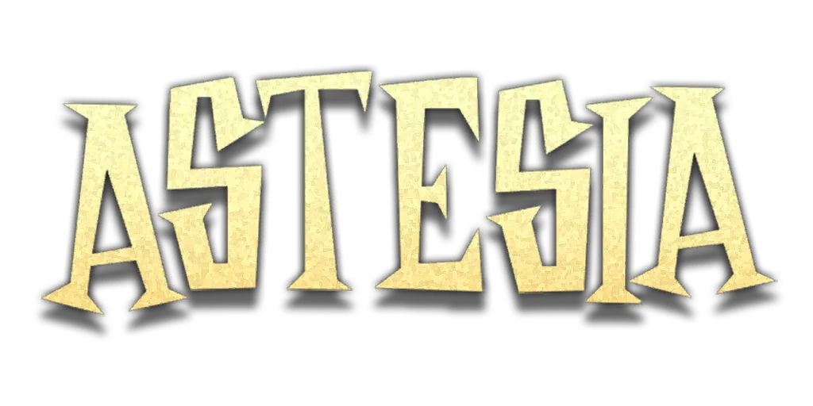
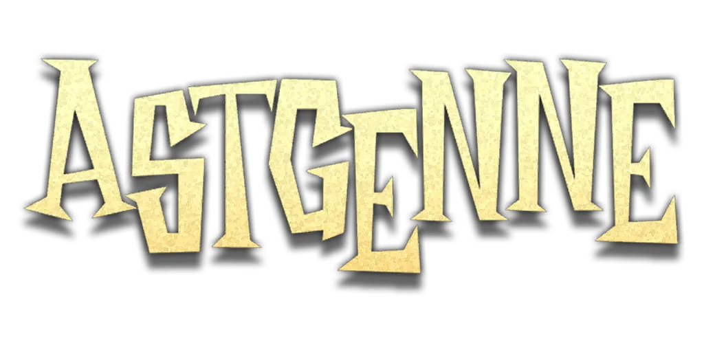
模组物品
“真理”
“同一片星空下”
D32钢
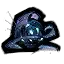
星空修补套件
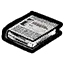
专精一技能书
专精二技能书
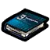
专精三技能书
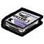
一级晋升凭证
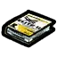
二级晋升凭证
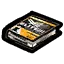
三级晋升凭证
探索者之愿
探索者之星
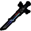
祷告星辰之语
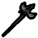
残响星辰之语
制式源石长剑
星象天体仪
奇工纳物箱
一体式书桌
描绘星空之羽
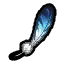
星之羽
群星·随想曲
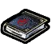
群星·幻想曲
群星·变奏曲
群星·练习曲
群星·颂扬曲
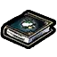
群星·圆舞曲
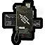
星极证章
科研者之愿
科研者之星
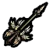
昭示星光之愿
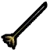
残缺星光之愿
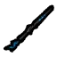
制式源石短杖
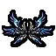
翱翔星海之翼
微星投影仪
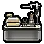
实验操作台
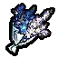
飞燕草花束
飞燕草
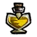
瓶装活力混合剂
壶装活力混合剂
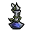
少许沉沦悲意
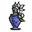
杯装沉沦悲意
位面晶体炸弹
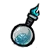
辉煌晶体炸弹
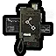
星源证章
黯淡星河之钥
兔兔落地灯
“全是兔兔”糖果机